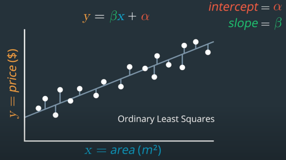
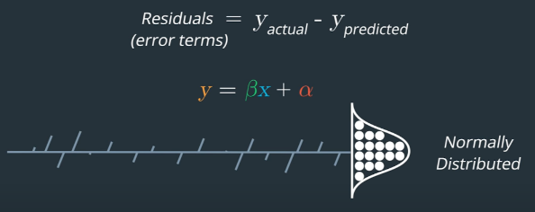

Regression
Table of Contents
1 Concept
To use one or more independent variables to predict a dependent variable. The regression is used to see how two assets move in relation to each other, e.g. Statistical Arbitrage.
2 Pros and Cons
- Pros
- a tool to analyze time-series data
- a fundamental building block of neural network
- Cons
- Regression is sensitive to some choice you make about the model. For instance, how much historical data we choose to use in the model.
- Regression is sensitive to outliers in the data. As it adds more noise to the trading data.
3 Linear Regression
Say \(y\) depends on \(x\) \[y=\beta x + \alpha\]
- \(\beta\) is coefficient
- \(\alpha\) is intercept

- Residuals(error terms): differences between the best fit regression line at each point.
- \(residuals=y_{actual}-y_{predicted}\)
- if residuals are not normally distributed, this gives us a hint that the model has a bias in its prediction errors. One way to improve is to use Multiple Regression.

from sklearn.linear_model import LinearRegression def regression_slope_and_intercept(xSeries, ySeries): """ xSeries: pandas series, x variable ySeries: pandas series, y variable """ lr = LinearRegression() xVar = s1.values.reshape(-1,1) # reshape to 2D numpy array [1, 2, 3] -> [[1], [2], [3]] yVar = s2.values.reshape(-1,1) lr.fit(xVar, yVar) slope = lr.coef_[0][0] intercept = lr.intercept_[0] return (slope, intercept)
4 Multiple Regression
\[y=\sum_{i=1}^{n}\beta_{i}x_{i} + \alpha\]
4.1 Multivariate Multiple Regression
Use more than one independent variables to predict more than one dependent variables. \[y_1=\sum_{i=1}^{n}\beta_{1i}x_{1i} + \alpha_1\] \[y_2=\sum_{i=1}^{n}\beta_{2i}x_{2i} + \alpha_2\]
4.2 Testing for Dependency
- R-squared (\(R^2\)) metric: range from 0 to 1. R-squared is 1 means all the variation in the dependent variable can be explained by all the variation in the independent variable
- Adjusted R-squared: to find the minimum combination of independent variables that are most relevant for our model.
- F-test: checks whether coefficients and intercepts are not zero, therefore the model describes a meaningful relationship.
- \(H_0\): parameters are zero.
- \(pvalue\le 0.05\): parameters are not zero.
5 References
- Lesson 12